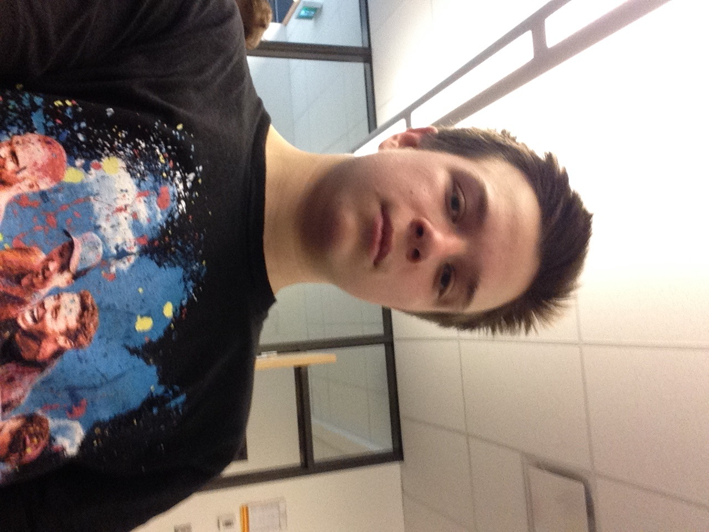

Hello, my name is Tomaz Zlindra, born in 2004 in the city of Vancouver, BC. I am currently 15 years old and I am enrolled at Kitsilano Secondary School. Some hobbies that I undertake include piano, video games, watching movies, play sports like ultimate and basketball, and others. I earned two minimum wage jobs, one at Choices and one at Kumon and work 10+ hours a week. I'm probably going to save the money for a new gaming PC. In the future I think I will stay in Vancouver and aspire Engineering as a career at UBC.
In this course, I would like to learn as many languages as possible, because in the future I want to become an Electrical Engineering, maybe work for Intel, AMD or Nvidea. Even though there is less programming involved in Electrical Engineering compared to Computer Engineering, it is better to have on a resumé. Preferably I would want to learn Java or C++, because there is a wider range of uses for these languages and they are used in universities very often.
My favourite website is YouTube.
